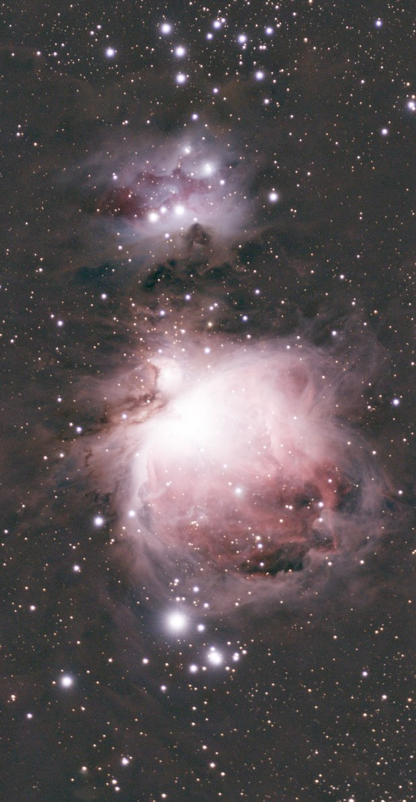
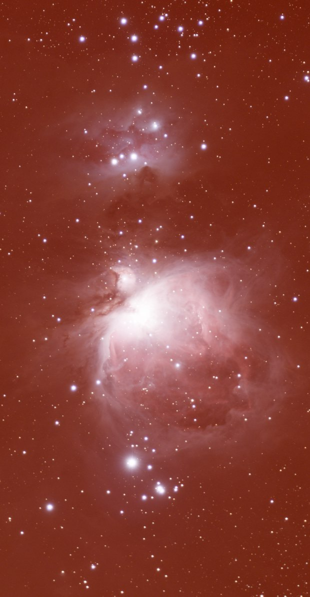

Linear image
Background tool
Removes light-pollution gradients and neutralises the sky.
How to use it
- Select the step in the sequence, or add the tool from Tools.
- Set it, then press Preview: the step is computed without being applied.
- Press Apply to keep the result, or change the settings and preview again.
Settings
- Remove gradients
- Models the sky glow and the light-pollution gradients, and subtracts them.
- Samples
- How many sky samples feed the model: more follows finer gradients.
- Smoothing
- How smooth the gradient model is: more keeps faint nebulosity safe.
- Neutralize the sky colour
- Offsets each colour so that the sky background reads neutral grey.
- Balance the colours on the stars
- Scales red and blue so that the typical star is white. Untick it when Colour calibration is used.
When to use it
Right after the crop, while the image is linear. A gradient that has been stretched is much harder to remove.
Image
Made for a linear image; it can be used on a stretched one.
Example


withoutwith Background